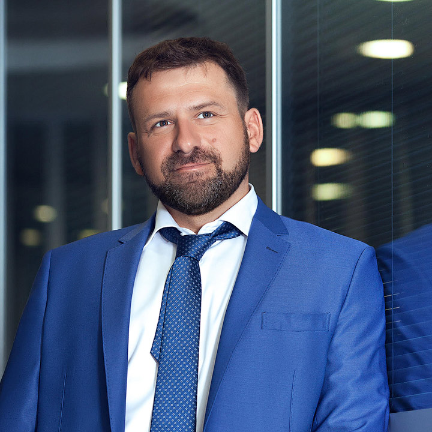

Поддержка проекта
Передача лучшего бизнес-опыта
через наставничество
через наставничество
Цель «Cпутника»
Передача опыта от самых успешных самым перспективным предпринимателям.
Прошедшие отбор получают поддержку наставников из числа выдающихся бизнесменов, на весь
жизненный цикл бизнеса, что позволяет им стать эффективнее и обеспечить кратный рост.
01
Перспективным предпринимателям
- всесторонний аудит бизнеса, выявление слабых мест
- система поддержки на весь жизненный цикл
- возможность привлечения инвестиций
- лучший практический опыт
- кратный рост эффективности и результативности
02
Менторам
и экспертам
и экспертам
- возможность передавать свой лучший опыт
- изучение через обучение
- возможность инвестиций

Почему наставничество так ценно именно сегодня?
«Бизнес-обучение — очень важная ступень в формировании костяка предводителей команды, которая
будет руководить любыми процессами, независимо от имеющегося образования.»
Наставничество — незаменимая вещь, чтобы подготовиться к ведению бизнеса
«Опытные предприниматели готовы добровольно и безвозмездно оказывать консультации
и делиться опытом. Главным мотивом для них является моральное удовлетворение от того,
что они помогают людям, которым не хватает знаний и навыков.»